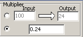
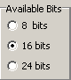
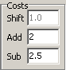
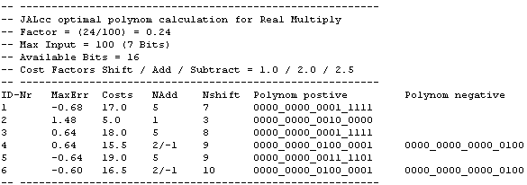
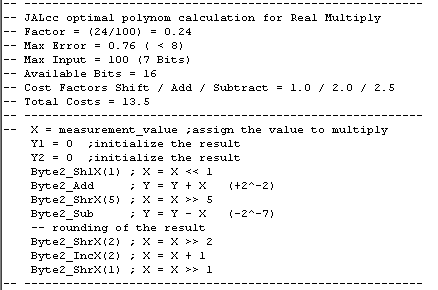

JALcc, Multiply by a Real Constant
Introduction
Example: scale an input value (fast) by multiplying it with some constant factor, e.g. factor=3.6.
Now for the optimal calculation (in the sense of speed) we need to know
This program generates a number of optimal polynoms, and calculates the total costs of each polynom implementation.
Optimalization is done by adding zeroes, replacing more than 2 consecutive ones (Golovchenko) and by final rounding. Optimalization is not done on the factor but on the results, e.g. with brute-force all possible input values are checked and from there the maximum error is calculated.
The program is available as standalone program and is incorporated in JALcc. In JALcc the functionality is available both as macro and as a wizard. (The standalone version can be downloaded as a zip file)
Macro MUL_CONST
todo...
Wizard
(The stand alone program is equal to the JALcc wizard)
The factor can be applied either as a conversion from input to output, or by the factor itself.

Next thing todo is to define the maximum input value. This is not specified in bits, because you'll often not using the whole range. Because the optimal polynome is calculated on the result (and not on the polynom), a better optimum may be found with lower maximum input value.
The availbale bits determine (together with the maximum input value) determines the maximum polynom length and the maximum number of zeroes to be added.

The costs are definied relative to a shift operation. The cost-factors will depend on the routines used for adding/subtracting and shifting. For the library byte3_math the following costs are estimated:

The costs for an increment operation (used in rounding) are assumed to be equal to a shift operation.
The desired maximum error should be always greater than 0.5 or if the factor is greater then 1 it should be at least 0.5*factor. These figures are based on using the complete input range (see error discussion below).
Normally the program searches for increasing accuracy and decreasing costs, starting at a low value for the polynom length and no extra zeroes. By checking the checkbox below it's possible show all the possible polynoms with their maximum error and cost factor.
Starting the search for the optimal polynom can be done by pressing
And will result in the following output

ID-Nr = is meant to select for which polynoms the code should be generated
MaxErr = the absolute maximum error that occured over the whole specified input range
Costs = the relative total costs of all operation
Nadd = number of add / subtract (negative) operations
Nshift = the total number of shifts to be performed
Polynom_positive = the polynom of add-operations
Polynom_negative = the polynom of subtract-operations
With these figures, I should either choose for
- ID-Nr = 2, very low cost (5) , but large error (1.48)
or go for the most accurate
- ID-Nr = 6, moderate costs (16.5), but the smallest error (-0.6)
Let's say we choose ID-Nr = 6
By pressing the button "Generate Code", we get the following JAL code:

If you're not using the lib Byte3_Math, you easily derive your own calls from the comment lines.
(The memo is fully editable)
The other buttons
PRINT = print the memo
CLEAR = clear the memo
CLIPBOARD = copy the memo to the clipboard (with ctrl-C you can also copy selected parts)
OK+INSERT = JALcc macro substitution
CLOSE = close the program (last settings will be remembered)
Information below is only for background information
Minimal error
The minimal theoretical output-error that can be achieved (with a unfinite polynom length) is 0.5.
After all, considering all possible input values, there will be always results like
23.5000000001....
23.4999999999....
For a factor larger than 1, another way of looking at the maximum permissable error should be used: Using a factor of 3.6 will generates output 0,4,7,11,... So it doesn't make sense to hunt for an maximum error smaller than 1.5. Or in general speaking, if factor >1 then an it makes sense to achieve a maximum error smaller than 0.5*factor.
Depending on the factor, these would be reasonable maximum errors
factor = 3.2 --> maximum error to achieve = 1.6
factor = 0.3 --> maximum error to achieve = 0.6
factor = 0.03 --> maximum error to achieve = 0.52
Polynom
The maximum length of the polynom is equal to the maximum number of input-bits, i.e. Nbits_input. Higher order terms will always result in a zero addition or subtraction.
We can calculate one extra polynom term, to round the factor in a correct way. So if this extra term is "1" we add +1 to our polynom otherwise we do nothing. (Comparable with rounding 0.5 and higher in decimal arithmic.) Using the formula given below, rounding is done automatic.
We can get a higher accuracy, if we use a higher order polynom and shift the input value to the left, so the polynom and the maximum input value both occupies the same number of bits.
First the maximum polynom length should be determined. In general the length of the polynom doesn't need to be larger than the number of bits of the maximum input value.
Nbits_polynom = Nbits_Input
But for using terms of the polynom, we need to be able to shift the input to the left by the length of the polynom. In general this is a limiting factor, and therefor we split the available space equally between polynom (may have 1 more) and shift operation.
if Nbits_polynom > (Nbits_available - Nbits_input)
then Nbits_polynom = (Nbits_available + 1) div 2
Calculating the polynom on a normal computer is very simple (even the rounding is correct !!)
polynom_raw:=round((1 shl (Nbits_input-Nshl))*factor);
In this formula Nshl = the number of bits before the decimal
Nshl:=round(log2(trunc(factor)));
Now it's time to parse the string and apply a modified Golovchenko's method: look for 2 or more consecutive "1". (2 or less "1" will not reduce the number of additions/subtractions and will only replace addition by subtraction, which is often more complicated.)
Although there's one exception: "...011" can be optimized by "...100", that's because the resulting subtraction falls outside the range and so it doesn't require any calculation. To keep the algoritme simple, we temporary shift the polynom_raw to the left by 1 place and add 1. After replacing all "111" we shift everything back 1 place.
Now we have all the polynoms correct
-- Polynom length = 8
-- OnlyAdd polynom = 0000_0000_1110_0110
-- Positive polynom = 0000_0001_0000_0110
-- Negative polynom = 0000_0000_0010_0000
Now we can shorten the polynom if they end on zeroes. This can save a few shift operations. Like in the above example, it will save 1 shift at the start of the calculation and 1 shift at the end.
-- Optimized Polynom length = 7